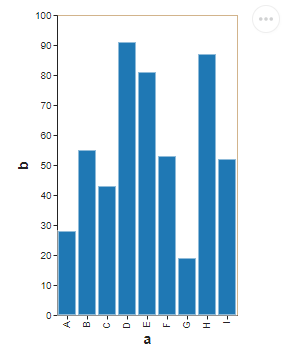
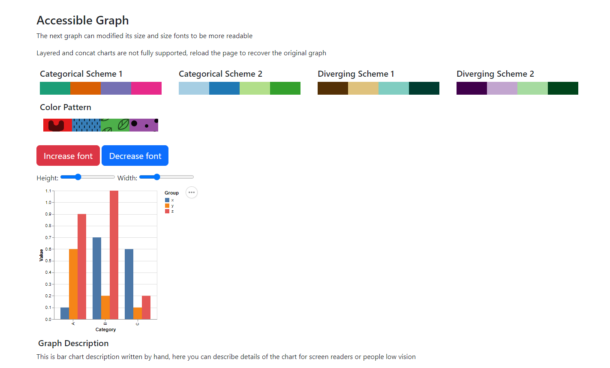
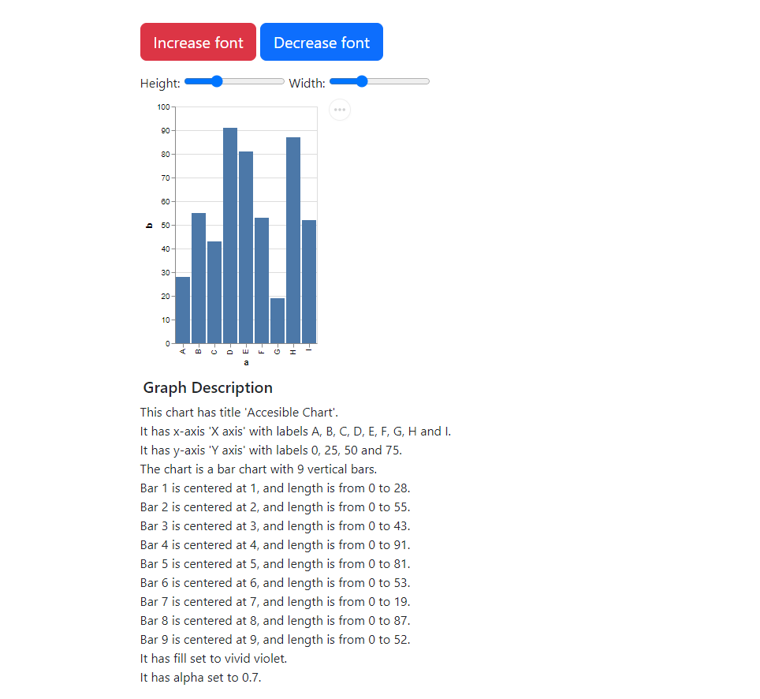
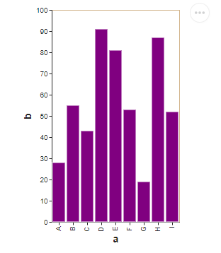
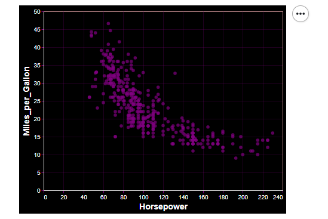
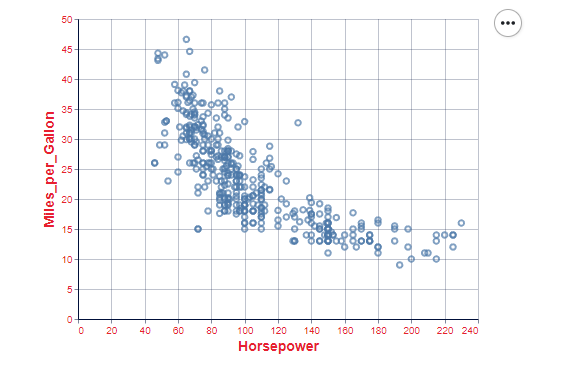

Examples
Enable altair-easeviz theme
This example shows to enable any theme from altair-easeviz and use it in an altair.Chart

import altair as alt
import pandas as pd
# Enable Theme accessible_theme, dark_accessible_theme, filler_pattern_theme, print_theme
alt.themes.enable('accessible_theme')
# Define a Chart
source = pd.DataFrame({
'a': ['A', 'B', 'C', 'D', 'E', 'F', 'G', 'H', 'I'],
'b': [28, 55, 43, 91, 81, 53, 19, 87, 52]
})
alt.Chart(source).mark_bar().encode(
x='a',
y='b'
)
Create an HTML with functions
This example shows how to create a HTML with the function of our library, and this HTML will have some customization features. Be cautious that the features do not work in all the charts like composed charts(Concat, Repeat, etc.)

import altair as alt
import pandas as pd
from altair_easeviz import create_accessible_scheme
# Defining a chart
source = pd.DataFrame({
"Category": list("AAABBBCCC"),
"Group": list("xyzxyzxyz"),
"Value": [0.1, 0.6, 0.9, 0.7, 0.2, 1.1, 0.6, 0.1, 0.2]
})
base = alt.Chart(source).mark_bar().encode(
x="Category:N",
y="Value:Q",
xOffset="Group:N",
color="Group:N"
)
# Creates an HTML named bar-chart.html
create_accessible_scheme(base, 'bar-chart',
'This is bar chart description written by hand, here you can describe details of the chart for screen readers or people low vision')
Generate description of a chart
This example shows how to generate a description of a Chart. Remember, in order to use this function have R running with appropriate libraries, check the user guide for more details.
import altair as alt
import pandas as pd
from altair_easeviz import create_accessible_scheme, generate_description
source = pd.DataFrame({
'a': ['A', 'B', 'C', 'D', 'E', 'F', 'G', 'H', 'I'],
'b': [28, 55, 43, 91, 81, 53, 19, 87, 52]
})
base = alt.Chart(source).mark_bar().encode(
x='a',
y='b'
)
# Generate description of the chart
description = generate_description(base, 'barchart', source['a'].tolist(), source['b'].tolist())
# The functions return a dict with the key 'error' if any exceptions were throw and 'res' with the generated description
description = description['res'] if 'res' in description else description['error']
print(description)
# This chart has title 'Accessible Chart' ......
Create an HTML with a description
This example shows how to create a HTML with a description generated by our library and put it in an HTML created too by our library.

import altair as alt
import pandas as pd
from altair_easeviz import create_accessible_scheme, generate_description
# Defining chart
source = pd.DataFrame({
'a': ['A', 'B', 'C', 'D', 'E', 'F', 'G', 'H', 'I'],
'b': [28, 55, 43, 91, 81, 53, 19, 87, 52]
})
base = alt.Chart(source).mark_bar().encode(
x='a',
y='b'
)
# Generate description of the chart
description = generate_description(base, 'barchart', source['a'].tolist(), source['b'].tolist())
# The functions return a dict with the key 'error' if any exceptions were throw and 'res' with the generated description
description = description['res'] if 'res' in description else description['error']
# We render the description in an HTML
create_accessible_scheme(base, 'proba', description)
Modify an altair-easeviz theme
This example shows how to change a built-in theme with any of the functions of ModelTheme, you can see more in the API page

import altair as alt
import pandas as pd
from altair_easeviz.models import AccessibleTheme
# Make an instance of a ModelTheme
accessible_theme = AccessibleTheme()
# Call any of its function to change a atribute
accessible_theme.change_mark_color('purple')
# Enable the theme
alt.themes.enable('accessible_theme')
# Define the Chart
source = pd.DataFrame({
'a': ['A', 'B', 'C', 'D', 'E', 'F', 'G', 'H', 'I'],
'b': [28, 55, 43, 91, 81, 53, 19, 87, 52]
})
alt.Chart(source).mark_bar().encode(
x='a',
y='b'
)
Create a new Theme
This example shows how to create a new theme with our model ModelTheme.

import altair as alt
from altair_easeviz.models import ModelTheme
from vega_datasets import data
# Create theme (name_theme, text_color, axis_color, mark_color, background_color, show_grid)
purple_theme = ModelTheme('purple_theme', 'white', 'purple', 'purple', 'black', True)
# Register and enable theme
alt.themes.register(purple_theme.getName(), purple_theme.get_theme)
alt.themes.enable(purple_theme.getName())
# draw the chart
cars = data.cars.url
chart = alt.Chart(cars).mark_point().encode(
x='Horsepower:Q',
y='Miles_per_Gallon:Q'
)
Crate a new Theme with ConfigModel
This example shows how to create a new theme with our ConfigModel and other models. Here we use a model related to the axis configuration.

import altair as alt
from vega_datasets import data
from altair_easeviz.models import AxisModel, ConfigModel
# Create a new dictionary with the configurations for the axis
axis_config = AxisModel(labelColor='#e7212f', titleColor='#e7212f').create_axis()
# Create a new dictionary of configurations
red_text_axis = ConfigModel(axis=axis_config).create_config()
# Define the theme by return the dictionary with the configurations
def red_axis_theme():
return red_text_axis
# register the custom theme under a chosen name
alt.themes.register('red_axis_theme', red_axis_theme)
# enable the newly registered theme
alt.themes.enable('red_axis_theme')
# draw the chart
cars = data.cars.url
alt.Chart(cars).mark_point().encode(
x='Horsepower:Q',
y='Miles_per_Gallon:Q'
)